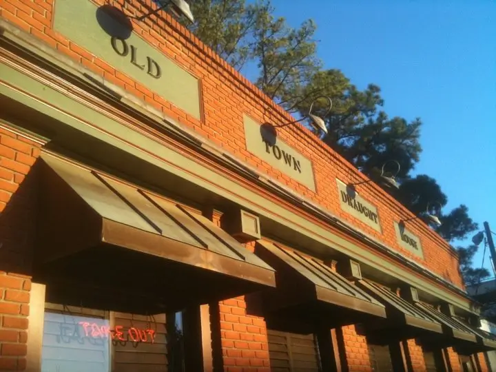

Old Town Draught House is a tavern on Spring Garden St that serves
sandwiches and burgers, as well as alcoholic beverages for of-age
patrons.
Old Town Draught House is open 7 days a week 11 am to 11 pm
The food has a premium price but is high quality, good for a fine
lunch or dinner out with friends without the need to stray far
from campus. My favorite is the Old Town Burger with
house-fried chips.
It appears that the Old Town Burger has been removed from
the menu, according to the website. Another favorite of mine is
the Black and Blue, a blackened burger with bacon, blue
cheese, mushrooms, red onions, and a barbeque aioli.

Some kind of sandwich
img courtesy of google

Some other sandwich
img courtesy of google

a beer
img courtesy of google